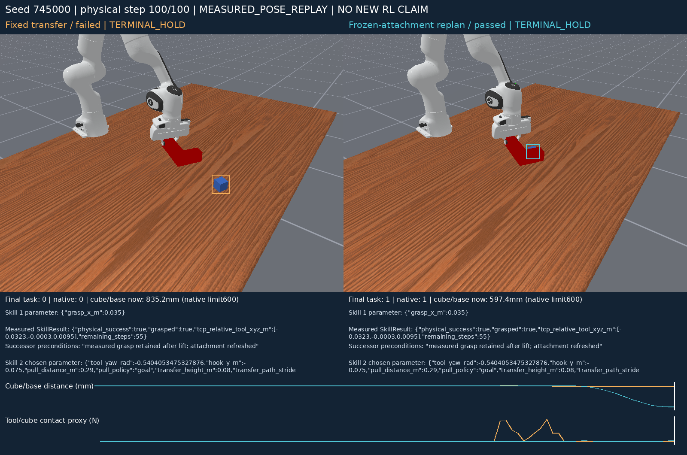
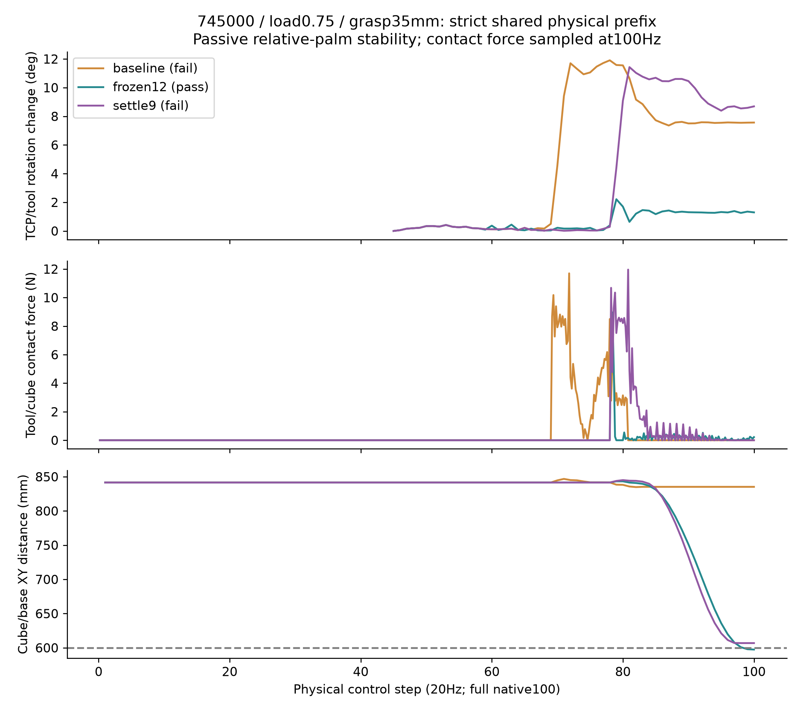
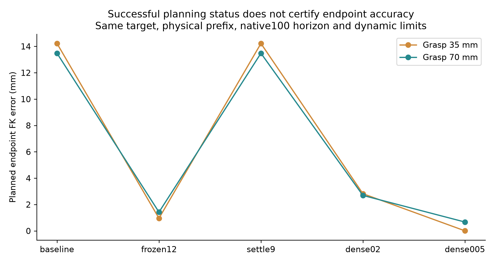
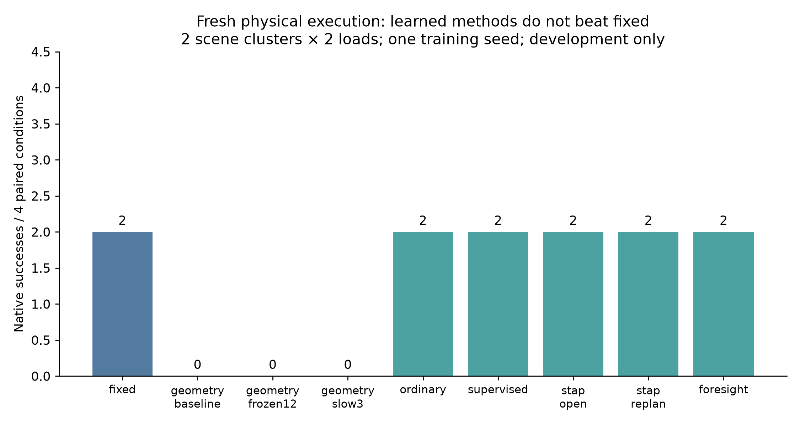

EXP-003 · Actual offline physics · Independent method gain: UNVERIFIED
同一PICK_TOOL物理前段，后继调度不同。没有重新测量附着也能救回，排除“新附着信息必需”的解释。
打开RAW / 英文标注视频 + 可点击逐帧曲线RAW完整视频 · ANNOTATED完整视频 · 解释级别与来源


35mm抓位：接触前相对旋转<0.5°；baseline接触后约12°。额外等待9步仍未通过官方成功标准。

终点误差降低不保证成功：0.02与0.005积分分辨率各救回一个抓位，但成功抓位相反。保留负结果，不称新RL机制。

| Method | Native success | Paired comparison |
|---|---|---|
| fixed | 2/4 | 0 rescue / 0 regression vs fixed |
| ordinary | 2/4 | 0 rescue / 0 regression vs fixed |
| supervised | 2/4 | 0 rescue / 0 regression vs fixed |
| stap_open | 2/4 | 0 rescue / 0 regression vs fixed |
| stap_replan | 2/4 | 0 rescue / 0 regression vs fixed |
| foresight | 2/4 | 0 rescue / 0 regression vs fixed |
仅2独立场景×2已知质量条件、一个训练种子。几何最短路径选项0/4不是唯一强基线；保留100mm参考也为2/4。
精炼研究结论与复现说明 · 结果与成本 · 模型预测 vs 物理结果 · 真实训练曲线 · 全部原始证据SHA
下一步统一计划终点、实际到位、接触入口和剩余时间的合同，再检验跨抓位后继调度是否仍留有稳健学习空间。ARES-R只读，无现场设备或密封测试。